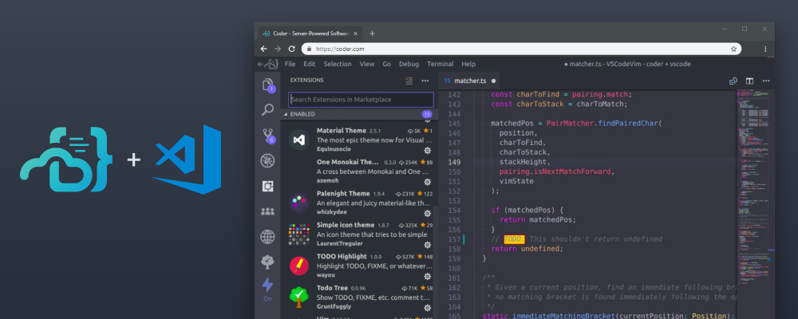

嵌入式和分布式系统


无处不在的计算机
即便是 “非智能” 的设备，里面都有

它们都是 “计算机”
- 通用处理器 (非常简单的指令集)
- RAM (寄存器)/ROM (例如声音)
- I/O 设备 (传感器、收发器、音箱……)
你们日常生活中任何涉及 “自动控制” 的物件，几乎都有计算机
- 充电宝/电饭锅/洗衣机/键盘/鼠标...
- 主控芯片 (SoC) 的成本低至几毛钱
- 机床/飞机/火箭...
例子：RT-Thread
最小系统: 1.2 KiB RAM, 3 KiB Flash
- 应用程序和操作系统内核一起链接
- 可配置的模块 (LibraryOS)
- 最小的内核：线程、消息/信号量、时钟/中断管理
- 就像你们的 OSLab!

RT-Thread 应用
更多的特性支持
- 多处理器/MMU
- POSIX 文件系统 (L3 - vfs)
- pthreads API (L2 - kmt)
- 网络协议栈 (希望在未来的 OSLab 里加入; lwip)

(shell 是一个线程; 是不是很熟悉？)
RT-Thread 应用 (cont'd)
GUI 也是可以的
- 只要有相应的图形驱动 (framebuffer, 2D 加速, ...) 就行了
- 真的就像你们的实验！

MiniGUI: 熟悉的味道？
The Internet

Web 1.0
- HTML, vbscript, javascript
“Web 2.0”: blogs, Wiki, social network, ...
- AJAX, jQuery (万能的
$)
直到今天
- HTML5, CSS3, ECMAScript 6, Node.js, react/Vue, WebAssembly, ...
- 没什么不能在浏览器里做的 (ChromeOS; 浏览器即操作系统) 😂

(分布式) 存储系统：对 CAP 的回应

假设 partition (fault) 总是有限的
- (假设数据中心之间的连接是可靠的；数据中心内节点失联就换一个)
- 要 availability: 容忍轻微的 inconsistency (eventual consistency)
- 要 consistency: 容忍轻微的延迟
例子: HDFS
用我们课上讲过的文件系统去理解 HDFS
- metadata 在一个 NameNode 集中管理 (write-ahead logging)
- 数据分布存储在 DataNode (可配置为 -replica)

Hadoop Ecosystem